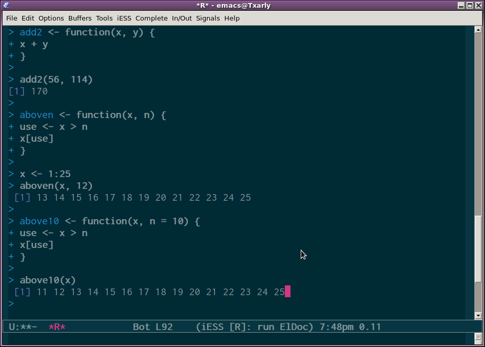
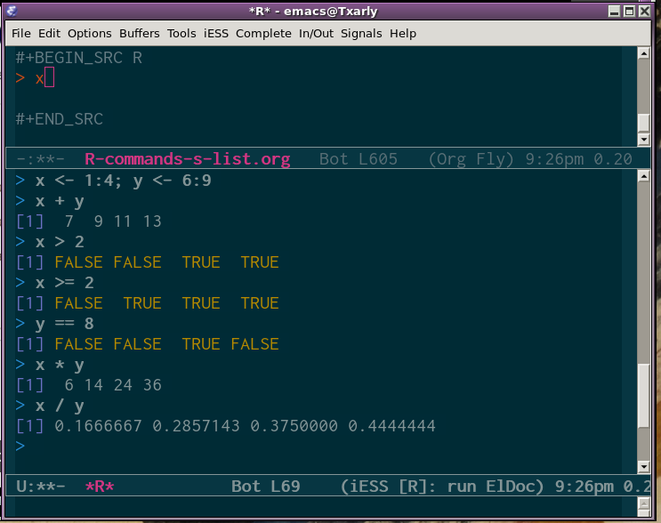
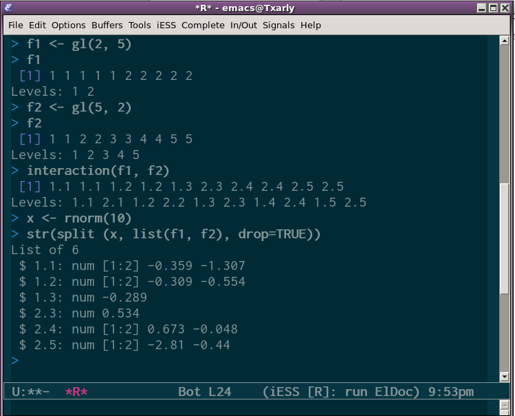

A Coursera on R, my notepad.
Table of Contents
Reading Data
Reading Data
read.table, read.csv #for Reading tabular data readLines # for reading lines of a text file source # for reading in R code files (inverse of dump) dget # for reading in R code files (inverse of dput) load # for reading in saved workspaces unserialize # for reading single R objects in binary form
Writing Data
There are analogous functions for writing data to files.
write.table writeLines dump dput save serialize
Reading Data Files with read.table
The read.table function is one of the most common used functions for reading data. It has a few important arguments:
file # the name of a file, or a connection. header # logical indicating how the columns are separated sep # a string indicating how the columns are separated. colClasses # a character vector indicating the class of each column in the dataset. nrows # the number of rows in the dataset. comment.char # a character string indicating the comment character. skip # the number of lines to skip from the beginning stringsAsFactors # should character variables be coded as factors?
read.table
For small to moderate sized datasets, you can usually call read.table without specifying any other arguments.
data <- read.table("foo.txt")
R will automatically:
- Skip lines that begin with a #
- Figure out how many rows there are (and how much memory needs to be allocated)
- Figure what type of variable is in each column of the table telling R all these things directly makes R run faster and more efficiently.
- read.csv is identical to read.table except that the default separator is a comma.
Calculating Memory Requirements.
I have a data frame with 1'500,000 and 120 columns, all of which are numeric data. Roughly, how much memory is required to store this data frame?
1'500,000 x 120 x 8 bytes/numeric
= 1440000000 bytes
= 1440000000 /220 bytes/MB
= 1373.29 MB
= 1.34 GB
Reading Lines of a Text File.
readLines can be useful for reading in lines of webpages.
## This might take time
con <- url("http://www.jhsph.edu", "r")
x <- readLines(con)
> head(x)
[1] "<!DOCTYPE HTML PUBLIC \"-//W3C//DTD HTML 4.0 Transitional//EN\">"
[2] ""
[3] "<html>"
[4] "<head>"
[5] "\t<meta http-equiv=\"Content-Type\" content=\"text/html;charset=utf-8
Control Structures
Control structures in R allow you to control the flow of execution of the program, depending on run-time conditions. common structures are:
if, else # testing a condition. for # execute a loop a fixed number of times. while # execute a loop while a condition is true. repeat # execute an infinite loop. break # break the execution of a loop. next # skip an interaction of a loop. return # exit a function.
Most control structures are not used in interactive sessions, but rather when writing functions or longer expressions.
Control Structures: if
if(<condition>) {
## do something
} else {
## do something else
}
if(<condition>) {
## do something
} else if (<condition>) {
## do something different
} else {
## do something different
}
Control Structures: for
for loops take an interator variable and assign it succesive values from a sequence or vector. For loops are most commonly used for iterating over the elements of an object (list, vector, etc.)
for(i in 1:10) {
print(i)
}
This loop takes the i variable and in each iteration of the loop gives it values 1,2,3, …, 10, and then exits.
## These 3 *for* loops have the same behaviour
x <- c("a", "b", "c", "d")
for(i in 1:4) {
print(x[i])
}
## it create a vector based on the var length and do the same as in the previous.
for(i in seq_along(x)) {
print(x[i])
}
## Here we got a different index variable, its a letter. As the index variable is going to be taking values from the vector itself, there is not reason why the index variable has to be an integer.
for(letter in x) {
print(x[i])
}
## This version is more compact.
for(i in 1:4) print(x[i])
Nested for loops.
for loops can be nested.
Though, be careful when nesting. Nesting beyond 2-3 levels is often very difficult to read/understand.
#Here an example:
x <- matrix(1:6, 2,3)
for(i in seq_len(nrow(x))) {
for(j in seq_len(ncol(x))) {
print(x[i, j])
}
}
Control Structures: while
While loops begin by testing a condition. If it is true, then they execute the loop body. Once the loop body is executed, the condition is tested again, and so forth.
-PS. Conditions are always evaluated from left to right.
z <- 5
while(z >= 3 && z <= 10) {
print(z)
coin <- rbinom(1, 1, 0.5)
if(coin == 1) { ##random walk
z <- z + 1
} else {
z <- z - 1
}
}
Control Structures: repeat
Repeat initiates an infinite loop; these are not commonly used in statistical applications but they do have their uses. The only way to exit a repeat loop is to call a break.
-Better to set a hard limit on the number of iterations (e.g. using a for loop) and then report whether convergence was achieved or not.
Control Structures: next, return .
for(i in 1:100) {
if(i <= 20) {
## Skip the first 20 iterations
next
}
## Do something here
}
return signals that a function should exit and return a given value.
- Summary:
- Control Structures like
if,whileandforallow us to control the flow of an R program. - Infinite loops should generally be avoided, even if they are theoretically correct.
- Control Structures mentioned here are primarily useful for writing programs; for command line interactive work, the *apply functions are more useful.
- Control Structures like
Functions
Functions represent some of the most powerful aspects of the R language. It's in some way the transition of the user of R into a kind of programmer of R.
- Basics about functions:
- Functions are created using the function () directive and are stored as R objects.
- Functions are "first class objects", which means that they can be treated much like any other R object.
- Functions can be nested, so that you can define a function inside another function. The return value of a function is the last expression in the function body to be evaluated.
f <- function(<argument>) {
## Do something interesting
}
Defining a Function, Lazy Evaluation.
Arguments to functions are evaluated lazily, so they are evaluated only as needed.
f <- function(a, b) {
a^2
}
f(2)
## [1] 4
This function never actually uses the argument b, so calling f(2) will not produce an error because the 2 gets positionally matched to a
Creating Functions.
Here a simple example:
add2 <- function(x, y) {
x + y
}
Here another example, a function that will take a vector of numbers and return the subset of the vector that's above the value of another one number.
aboven <- function(x, n) {
use <- x > n
x[use]
}
But, suppose we need to specify a value n by default, let's say 10
above10 <- function(x, n = 10) {
use <- x > n
x[use]
}
Here a screen-shot with the above examples.

Figure 1: Here what an emacs-R buffer with the above examples looks like.
(defun foo (x) (* x 3))
Lexical Scoping
Searching for the value for a free variable
- If the value of a symbol is not found in the environment in which a function was defined, then the search is continued in the parent environment.
- The search continues down the sequence of parent environments until we hit the top-level environment, this is usually the global environment (workspace) or the namespace of a package.
- After the top-level environment, the search continues down the search list until we hit the empty environment. If a value for a given symbol cannot be found once the empty environment is arrived at, then an error is thrown.
Let's have a look at this example:
make.power <- function(n) {
pow <- function(x) {
x^n
}
pow
}
This function returns another function as its value.
> cube <- make.power(3) > square <-make.power(2) > cube(3) [1] 27 > square(3) [1] 9
Exploring a Function Closure.
So, how do you know what's in a function's environment?. You can look at the environment the function was defined, by calling the LS function.
> ls(environment(cube))
[1] "n" "pow"
> get("n", environment(cube))
[1] 3
> ls(environment(square))
[1] "n" "pow"
> get("n", environment(square))
[1] 2
Lexical vs Dynamic.
y <- 10
f <- function(x) {
y <- 2
y^2 + g(x)
}
g <- function(x) {
x * y
}
What's the value of:
f(3)
Vectorized Operations.
Many operations in R are vectorized making code more efficient.
Here a couple of examples from my R box.

Figure 2: Vectorized Lineal Operations in R

Figure 3: Vectorized Matrix Operations in R.
As seen on the screen shoots operations are performed in parallel, literally element by element.
Dates and Times in R.
R has developed a special representation of dates and times.
- Dates are represented by the Date class.
- Times are represented by the POSIXct or the POSIXlt class.
- Dates are stored internally as the number of days since 1970-01-01
- Times are stored internally as the number of seconds since 1970-01-01.
Loop Functions.
Loop functions are some of the most powerful functions in the R language and they make it kind of very easy to use, specially in an interactive setting.
Looping on the Command Line.
Writing for, while loops is useful when programming but not particularly on the command line. There are some functions which implement looping to make it easier.
- lapply: Loop over a list and evaluate a function on each element.
- sapply: Same as lapply but try to simplify the result.
- apply: Apply a function over the margins of an array.
- tapply: Apply a function over subsets of a vector.
- mapply: Multivariate version of lapply.
An auxiliary function split is also useful, particularly in conjunction with lapply.
lapply
lapply takes three arguments: (1) a list x; (2) a function (or the name of the function) FUN; (3) other argument via its …argument. If x is not a list, it will be coerced to a list using as.list.
function (X, FUN, ...)
{
FUN <- match.fun(FUN)
if (!is.vector(x) || is.object(x))
X <- as.list(X)
.Internal(lapply(X, FUN))
}
<bytecode: 0x7ff7a1951c00>
<environment: namespace:base>
split
split takes a vector or other objects and splits it into groups determined by factor or list of factors.
> str(split) function (x, f, drop = FALSE, ...)
- x is a vector (or list) or data frame
- f is a factor (or coerced to one) or a list of factors.
- drop indicates whether empty factors levels should be dropped.
Splitting on More than One Level.

Figure 4: Splitting on more than one level.
mapply
mapply is a multivariate apply of sorts which applies a function in parallel over a set of arguments.
> str(mapply) function (FUN, ..., MoreArgs = NULL, SIMPLIFY = TRUE, USE.NAMES = TRUE)
- FUN is a function to apply.
- … contains arguments to apply over.
- MoreArgs is a list of others arguments to FUN.
- SIMPLIFY indicates whether the result should be simplified.
Vectorizing a Function.
The str Function.
This is the most important function in all R.
str: Compactly display the internal structure of an R object.
- A diagnostic function and an alternative to summary.
- It is especially well suited to compactly display the (abbreviated) contents of (possibly nested) lists.
- Roughly one line per basic object.
The basic goal of str (of structure) is to answer the question, what's in this object.?
Generating Random Numbers (Simulation)
Functions for probability distributions in R.
- rnom : generate random Normal variates with a given mean standard deviation.
- dnorm : evaluate the normal probability density (with a given mean/SD) at a point (or vector of points).
- pnorm : evaluate the cumulative distribution function for a Normal distribution.
- rpois : generate random Poisson variates with a given rate.
Probability distribution usually have four functions associated with them. The functions are prefixed with a:
- d for density,
- r for random number generation,
- p for cumulative distribution,
- q for quantile function.
So, every distribution has these four types of functions, so for the gamma distribution, there'll be a dgamma, pgamma and a qgamma function. And for the Poisson distribution there's the rpois dpois ppois and qpois functions.
Working with the Normal distribution requires using these four functions.
dnorm(x, mean=0, sd=1, log=FALSE) pnorm(q, mean=0, sd=1, lower.tail=TRUE, log.p=FALSE) qnorm(p, mean=0, sd=1, lower.tail=TRUE, log.p=FALSE) rnorm(n, mean=0, sd=1)
They each take a number of different parameters. All the functions required that you specify the mean and the standard deviation (sd), because that's what specifies the actual probability distribution. If you do not specify them, the default values are a standard normal distribution, which has mean = 0 and standard deviation one.
So just to be more explicit, if phi is the cumulative distribution for the standard normal distribution, then pnorm is equal to phi and qnorm is equal then to the inverse of phi.
- If Φ is the cumulative distribution function for a standard Normal distribution, then pnorm(q) = Φ(q) and qnorm(p) = Φ-1(p).
In the following example, x will be a ten variables random normal distribution vector with a roughly 20 as mean and 2 as standard deviation (sd):
x <- rnorm(10, 20, 2) > x [1] 18.37391 22.46904 19.26000 17.73401 20.12377 19.75070 21.50743 20.87168 [9] 19.92878 17.74464
The set.seed Function.
Any time you simulate random numbers, from any distribution, for any purpose, it's very important that you set the random number generator seed (notice numbers are not actually random but they appear random, that's the important thing) so the idea is that if you wanted to generate the same set of random numbers again, you could if wanted using the set.seed function, so anytime you set the seed it kind of sets the sequence of random variable that's going to occur and when you reset you set the sequence to go back to, allowing you debug, checking, or basically reproducing the problematic situation.
Generating Poisson Data.
- In probability theory, a Poisson process (named after the French mathematician Siméon Denis Poisson) is a stochastic process or random process (widely used) : a collection of random values, or the mathematical representation of, some random system or variable over time (indeterminacy). Those several (often infinitely many) directions in which the process may evolve.
Generating Poisson data:
> rpois(10, 1) ## rpois(count, mean) creates a distribution where count is the numbers to create & mean you'd like those to come close to [1] 3 1 0 1 0 0 1 0 1 1 > rpois(10, 2 [1] 6 2 2 1 3 2 2 1 1 2 > rpois(10, 20) [1] 20 11 21 20 20 21 17 15 24 20 > ppois(2, 2) ## Cumulative distribution [1] 0.6766764 ## Pr(x <= 2) > ppois(4, 2) [1] 0.947347 ## Pr(x <= 4) > ppois(6, 2) [1] 0.9954662 ## Pr(x <= 6)
Generating Random Numbers From a Linear Model.
Now, suppose we want to simulate from the following linear model:
> set.seed(20)
> x <- rnorm(100)
> e <- rnorm(100, 0, 2)
> y <- 0.5 + 2 * x + e
> summary(y)
Min. 1st Qu Median
-6.4080 -1.5400 0.7689 0.6893 2.9300 6.5050
> plot(x, y)
The R Profiler
Profiling is a systematic way to examine different parts of a program, useful when trying to optimise your code. Profiling is better than guessing. But, "we should forget about small efficiency, say about 97% of the time: premature optimisation is the root of a evil" (by Donald Knuth).
Rprof()keeps track of the function call stack at regularly sampled intervals and tabulates how much time is spend in each function.- Default sampling interval is 0.02 seconds.
- The
summaryRprof()function tabulates the R profiler output and calculates how much time is spend in which function. - There are two methods for normalising data "by.total": divides the time spend in each function by the total run time; (in the 4th week quiz, a question showed a one-function script and asked for guessing, before running the script, what percentage it would report if we tried to normalise the script by.total, —answer: 100%, because it's a just one function case); "by.self": does the same but subtracts out time spent in functions above in the call stack.
Appendix. A, Some key shot views.


{kind=link}
Appendix. B Short List of the Most Useful Commands.
Input and Display
#read files with labels in first row read.table(filename,header=TRUE) #read a tab or space delimited file read.table(filename,header=TRUE,sep=',') #read csv files x=c(1,2,4,8,16 ) #create a data vector with specified elements y=c(1:10) #create a data vector with elements 1-10 n=10 x1=c(rnorm(n)) #create a n item vector of random normal deviates y1=c(runif(n))+n #create another n item vector that has n added to each random uniform distribution z=rbinom(n,size,prob) #create n samples of size "size" with probability prob from the binomial vect=c(x,y) #combine them into one vector of length 2n mat=cbind(x,y) #combine them into a n x 2 matrix mat[4,2] #display the 4th row and the 2nd column mat[3,] #display the 3rd row mat[,2] #display the 2nd column subset(dataset,logical) #those objects meeting a logical criterion subset(data.df,select=variables,logical) #get those objects from a data frame that meet a criterion data.df[data.df=logical] #yet another way to get a subset x[order(x$B),] #sort a dataframe by the order of the elements in B x[rev(order(x$B)),] #sort the dataframe in reverse order browse.workspace #a menu command that creates a window with information about all variables in the workspace
Moving around.
ls() #list the variables in the workspace rm(x) #remove x from the workspace rm(list=ls()) #remove all the variables from the workspace attach(mat) #make the names of the variables in the matrix or data frame available in the workspace detach(mat) #releases the names new=old[,-n] #drop the nth column new=old[n,] #drop the nth row new=subset(old,logical) #select those cases that meet the logical condition complete = subset(data.df,complete.cases(data.df)) #find those cases with no missing values new=old[n1:n2,n3:n4] #select the n1 through n2 rows of variables n3 through n4).
Distributions
beta(a, b) gamma(x) choose(n, k) factorial(x) dnorm(x, mean=0, sd=1, log = FALSE) #normal distribution pnorm(q, mean=0, sd=1, lower.tail = TRUE, log.p = FALSE) qnorm(p, mean=0, sd=1, lower.tail = TRUE, log.p = FALSE) rnorm(n, mean=0, sd=1) dunif(x, min=0, max=1, log = FALSE) #uniform distribution punif(q, min=0, max=1, lower.tail = TRUE, log.p = FALSE) qunif(p, min=0, max=1, lower.tail = TRUE, log.p = FALSE) runif(n, min=0, max=1)
Data Manipulation.
replace(x, list, values) #remember to assign this to some object i.e., x <- replace(x,x==-9,NA)
#similar to the operation x[x==-9] <- NA
cut(x, breaks, labels = NULL,
include.lowest = FALSE, right = TRUE, dig.lab = 3, ...)
x.df=data.frame(x1,x2,x3 ...) #combine different kinds of data into a data frame
as.data.frame()
is.data.frame()
x=as.matrix()
scale() #converts a data frame to standardized scores
round(x,n) #rounds the values of x to n decimal places
ceiling(x) #vector x of smallest integers > x
floor(x) #vector x of largest interger < x
as.integer(x) #truncates real x to integers (compare to round(x,0)
as.integer(x < cutpoint) #vector x of 0 if less than cutpoint, 1 if greater than cutpoint)
factor(ifelse(a < cutpoint, "Neg", "Pos")) #is another way to dichotomize and to make a factor for analysis
transform(data.df,variable names = some operation) #can be part of a set up for a data set
x%in%y #tests each element of x for membership in y
y%in%x #tests each element of y for membership in x
all(x%in%y) #true if x is a proper subset of y
all(x) # for a vector of logical values, are they all true?
any(x) #for a vector of logical values, is at least one true?
Statistics and Transformations.
max()
min()
mean()
median()
sum()
var() #produces the variance covariance matrix
sd() #standard deviation
mad() #(median absolute deviation)
fivenum() #Tukey fivenumbers min, lowerhinge, median, upper hinge, max
table() #frequency counts of entries, ideally the entries are factors(although it works with integers or even reals)
scale(data,scale=T) #centers around the mean and scales by the sd)
cumsum(x) #cumulative sum, etc.
cumprod(x)
cummax(x)
cummin(x)
rev(x) #reverse the order of values in x
cor(x,y,use="pair") #correlation matrix for pairwise complete data, use="complete" for complete cases
aov(x~y,data=datafile)#where x and y can be matrices
aov.ex1 = aov(DV~IV,data=data.ex1) #do the analysis of variance or
aov.ex2 = aov(DV~IV1*IV21,data=data.ex2) #do a two way analysis of variance
summary(aov.ex1) #show the summary table
print(model.tables(aov.ex1,"means"),digits=3) #report the means and the number of subjects/cell
boxplot(DV~IV,data=data.ex1) #graphical summary appears in graphics window
lm(x~y,data=dataset) #basic linear model where x and y can be matrices (see plot.lm for plotting options)
t.test(x,g)
pairwise.t.test(x,g)
power.anova.test(groups = NULL, n = NULL, between.var = NULL,
within.var = NULL, sig.level = 0.05, power = NULL)
power.t.test(n = NULL, delta = NULL, sd = 1, sig.level = 0.05,
power = NULL, type = c("two.sample", "one.sample", "paired"),
alternative = c("two.sided", "one.sided"),strict = FALSE)
More Statistics: Regression and Linear Model
matrices lm(Y~X1+X2) lm(Y~X|W) solve(A,B) #inverse of A * B - used for linear regression solve(A) #inverse of A factanal() princomp()
Useful Additional Commands.
colSums (x, na.rm = FALSE, dims = 1)
rowSums (x, na.rm = FALSE, dims = 1)
colMeans(x, na.rm = FALSE, dims = 1)
rowMeans(x, na.rm = FALSE, dims = 1)
rowsum(x, group, reorder = TRUE, ...) #finds row sums for each level of a grouping variable
apply(X, MARGIN, FUN, ...) #applies the function (FUN) to either rows (1) or columns (2) on object X
apply(x,1,min) #finds the minimum for each row
apply(x,2,max) #finds the maximum for each column
col.max(x) #another way to find which column has the maximum value for each row
which.min(x)
which.max(x)
z=apply(big5r,1,which.min) #tells the row with the minimum value for every column
Graphics.
par(mfrow=c(nrow,mcol)) #number of rows and columns to graph
par(ask=TRUE) #ask for user input before drawing a new graph
par(omi=c(0,0,1,0) ) #set the size of the outer margins
mtext("some global title",3,outer=TRUE,line=1,cex=1.5) #note that we seem to need to add the global title last
#cex = character expansion factor
boxplot(x,main="title") #boxplot (box and whiskers)
title( "some title") #add a title to the first graph
hist() #histogram
plot()
plot(x,y,xlim=range(-1,1),ylim=range(-1,1),main=title)
par(mfrow=c(1,1)) #change the graph window back to one figure
symb=c(19,25,3,23)
colors=c("black","red","green","blue")
charact=c("S","T","N","H")
plot(PA,NAF,pch=symb[group],col=colors[group],bg=colors[condit],cex=1.5,main="Postive vs. Negative Affect by Film condition")
points(mPA,mNA,pch=symb[condit],cex=4.5,col=colors[condit],bg=colors[condit])
curve()
abline(a,b)
abline(a, b, untf = FALSE, ...)
abline(h=, untf = FALSE, ...)
abline(v=, untf = FALSE, ...)
abline(coef=, untf = FALSE, ...)
abline(reg=, untf = FALSE, ...)
identify()
plot(eatar,eanta,xlim=range(-1,1),ylim=range(-1,1),main=title)
identify(eatar,eanta,labels=labels(energysR[,1]) ) #dynamically puts names on the plots
locate()
legend()
pairs() #SPLOM (scatter plot Matrix)
pairs.panels () #SPLOM on lower off diagonal, histograms on diagonal, correlations on diagonal
#not standard R, but uses a function found in useful.r
matplot ()
biplot ())
plot(table(x)) #plot the frequencies of levels in x
x= recordPlot() #save the current plot device output in the object x
replayPlot(x) #replot object x
dev.control #various control functions for printing/saving graphic files
pdf(height=6, width=6) #create a pdf file for output
dev.of() #close the pdf file created with pdf
layout(mat) #specify where multiple graphs go on the page
#experiment with the magic code from Paul Murrell to do fancy graphic location
layout(rbind(c(1, 1, 2, 2, 3, 3),
c(0, 4, 4, 5, 5, 0)))
for (i in 1:5) {
plot(i, type="n")
text(1, i, paste("Plot", i), cex=4)
}
Distributions.
To generate random samples from a variety of distributions.
rnorm(n,mean,sd) rbinom(n,size,p) sample(x, size, replace = FALSE, prob = NULL) #samples with or without replacement
Working with Dates.
date <-strptime(as.character(date), "%m/%d/%y") #change the date field to a internal form for time
#see ?formats and ?POSIXlt
as.Date
month= months(date) #see also weekdays, Julian
And More…
Additional functions created by W. Revelle because, as stated, he needed some specific operation may be included in the workspace by issuing the source command:
These functions include:
#alpha.scale #find coefficient alpha for a scale and a dataframe of items #describe give means, sd, skew, n, and se #summ.stats #basic summary statistics by a grouping variable #error.crosses #(error bars in two space) #skew find skew #panel.cor taken from the examples for pairs #pairs.panels adapted from panel.cor -- gives a splom, histogram, and correlation matrix #multi.hist #plot multiple histograms #correct.cor #given a correlation matrix and a vector of reliabilities, correct for reliability #fisherz #convert pearson r to fisher z #paired.r #test for difference of dependent correlations #count.pairwise #count the number of good cases when doing pairwise analysis #eigen.loadings #convert eigen vector vectors to factor loadings by unnormalizing them #principal #yet another way to do a principal components analysis -- brute force eignvalue decomp #factor.congruence #find the factor congruence coeffiecints #factor.model #given a factor model, find the correlation matrix #factor.residuals #how well does it fit? #factor.rotate # rotate two columns of a factor matrix by theta (in degrees) #phi2poly #convert a matrix of phi coefficients to polychoric correlations